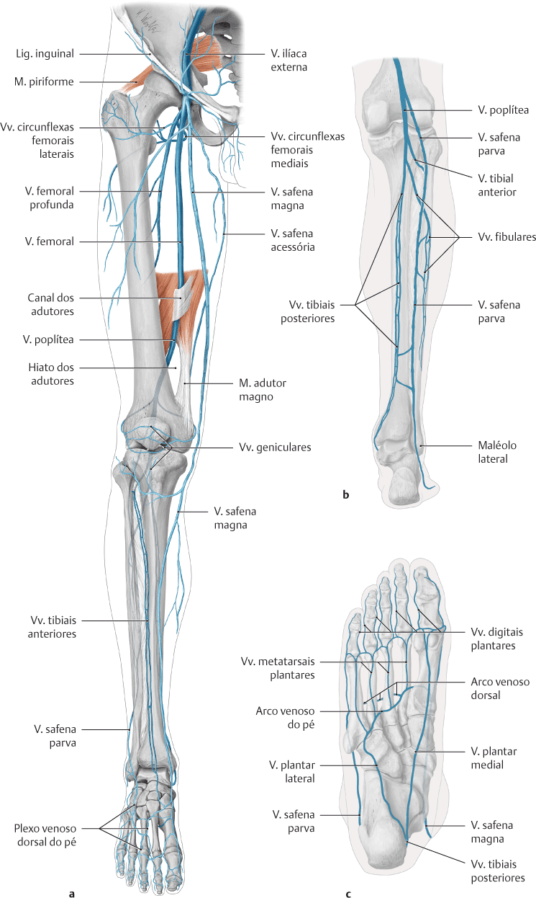
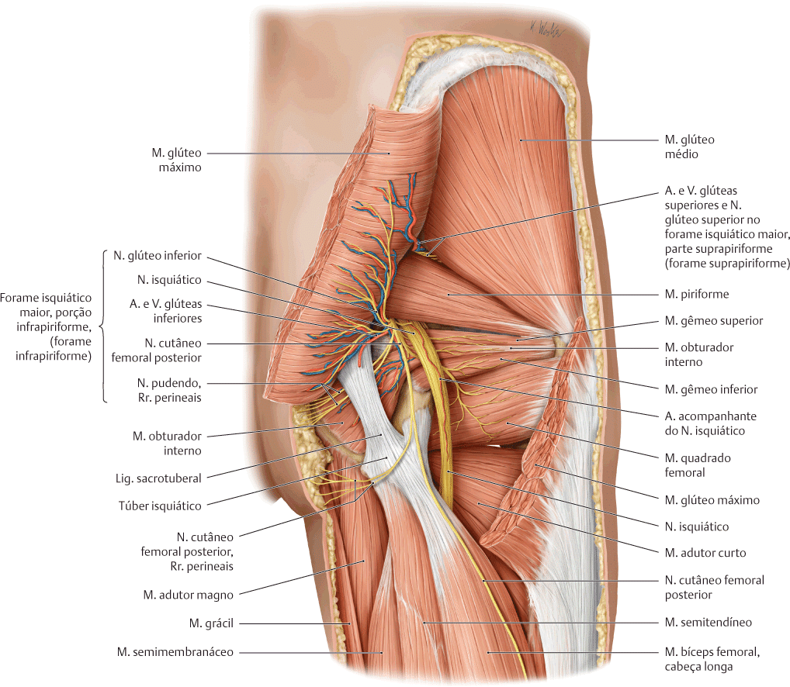
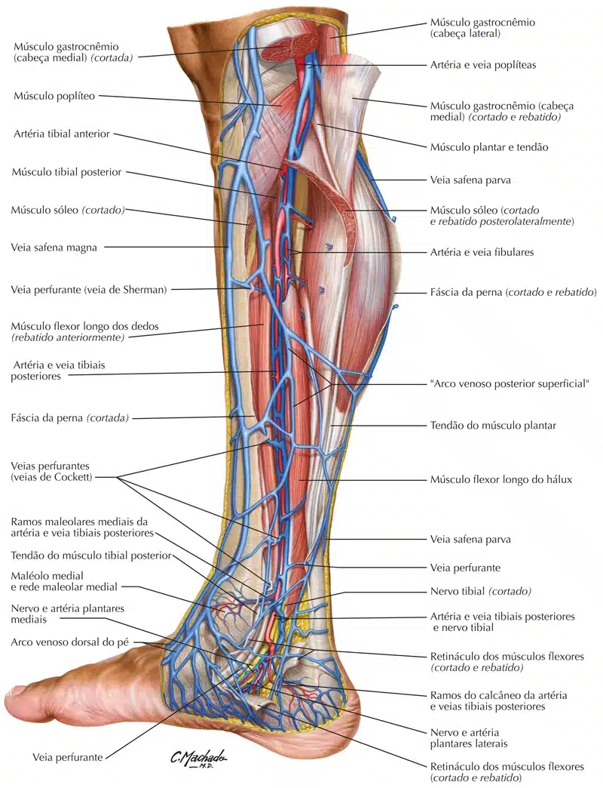
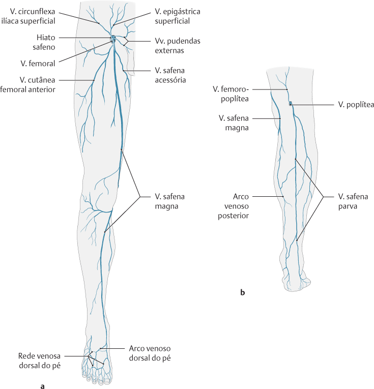

As veias do membro inferior drenam o sangue desoxigenado e o devolvem ao coração.
Elas podem ser divididas em dois grupos – profundas e superficiais :
As veias profundas estão localizadas abaixo da fáscia profunda do membro inferior e recebem os mesmos nomes que as artérias principais que passam pela região estudada.
As veias superficiais são encontradas no tecido subcutâneo. Elas drenam para as veias profundas na região da axila.
Veias Profundas
O sistema de drenagem venosa profunda do membro inferior está localizado abaixo da fáscia profunda do membro inferior.
Como regra geral, as veias profundas acompanham e compartilham o nome das principais artérias do membro inferior.
Frequentemente, a artéria e a veia estão localizadas dentro da mesma bainha vascular, de modo que as pulsações arteriais auxiliam o retorno venoso.
Perna e pé
A principal estrutura venosa do pé é o arco venoso dorsal, que drena principalmente para as veias superficiais.
Algumas veias do arco penetram profundamente na perna, formando a veia tibial anterior.
Na face plantar do pé surgem as veias plantares medial e lateral.
Essas veias se combinam para formar as veias tibial posterior e fibular.
A veia tibial posterior acompanha a artéria tibial posterior, entrando na perna posteriormente ao maléolo medial.
Na superfície posterior do joelho, as veias tibial anterior, tibial posterior e fibular se unem para formar a veia poplítea.
A veia poplítea entra na coxa através do canal adutor.
Coxa
Uma vez que a veia poplítea entra na coxa, ela é conhecida como veia femoral.
Situa-se anteriormente, acompanhando a artéria femoral.
A veia profunda da coxa (veia femoral profunda) é a outra estrutura venosa principal na coxa.
Através de veias perfurantes, drena o sangue dos músculos da coxa.
Em seguida, desemboca na seção distal da veia femoral.
A veia femoral deixa a coxa passando por baixo do ligamento inguinal, ponto em que é conhecida como veia ilíaca externa.

SCHUNKE, M. Prometheus - Atlas de Anatomia 3 Volumes. 4 ed. Guanabara Koogan, 2019.
Região glútea
A região glútea é drenada pelas veias glúteas inferior e superior.
Elas são separadas pelo m. piriforme e desembocam na veia ilíaca interna.

SCHUNKE, M. Prometheus - Atlas de Anatomia 3 Volumes. 4 ed. Guanabara Koogan, 2019.
Veias Superficiais
As veias superficiais do membro inferior passam pelo tecido subcutâneo.
Existem duas grandes veias superficiais: a veia safena magna e a veia safena parva.
Veia safena magna
É formada pelo arco venoso dorsal do pé e pela veia dorsal do hálux.
Ela sobe pela região medial da perna, passando anteriormente ao maléolo medial no tornozelo e posteriormente ao côndilo medial no joelho.
Conforme a veia sobe pela perna, ela recebe tributárias de outras pequenas veias superficiais.
A veia safena magna termina drenando para a veia femoral imediatamente inferior ao ligamento inguinal.
Cirurgicamente, a veia safena magna pode ser colhida e usada como um vaso em revascularizações do miocárdio.

NETTER: Frank H. Netter Atlas De Anatomia Humana. 7 ed. Rio de Janeiro, Elsevier, 2018.
Veia safena parva
É formada pelo arco venoso dorsal do pé e pela veia dorsal do 5º dedo (mínimo).
Ela sobe pela face posterior da perna, passando posteriormente ao maléolo lateral, ao longo da margem lateral do tendão calcâneo.
Ela passa entre as duas cabeças do músculo gastrocnêmio e desemboca na veia poplítea na fossa poplítea.

SCHUNKE, M. Prometheus - Atlas de Anatomia 3 Volumes. 4 ed. Guanabara Koogan, 2019.